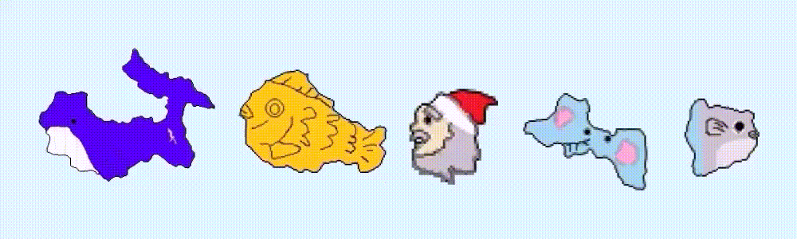
 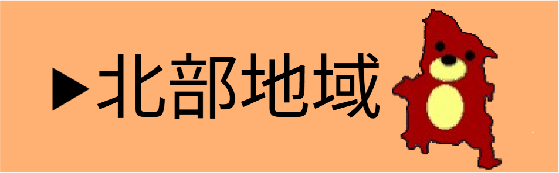
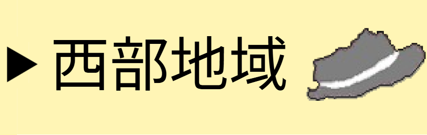
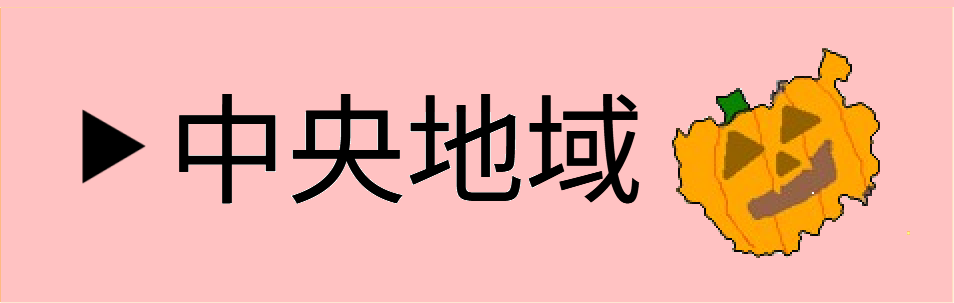
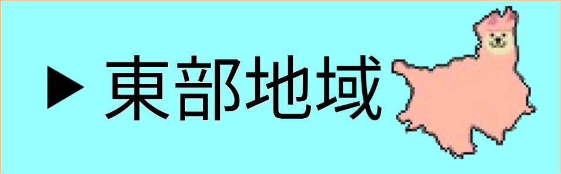
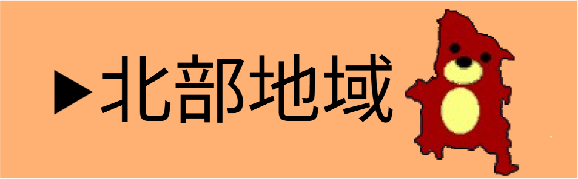
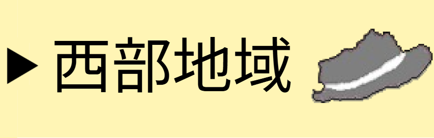
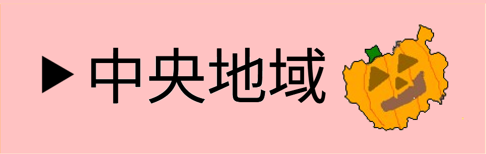
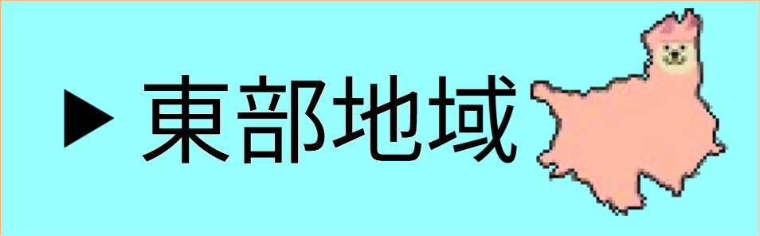
・拍手かっさい たまげる SAITAMAPについて・
埼玉県には全国最多の40の市と、22の町、1つの村があり、それぞれ特色があって、とても魅力的です。
しかし、市町村の数が多いこともあり、自分が住んでいる市以外は形や位置があまりわからないことに気付きました。
そこで、市町村の形を一つ一つキャラクター化することで、誰でも楽しく市町村の形や位置を覚えることができると思い、このSAITAMAPを作成しました。
自分の推しのキャラクターを見つけたり、クイズに答えたりしながら、楽しく埼玉県について知ってもらえたら嬉しいです。
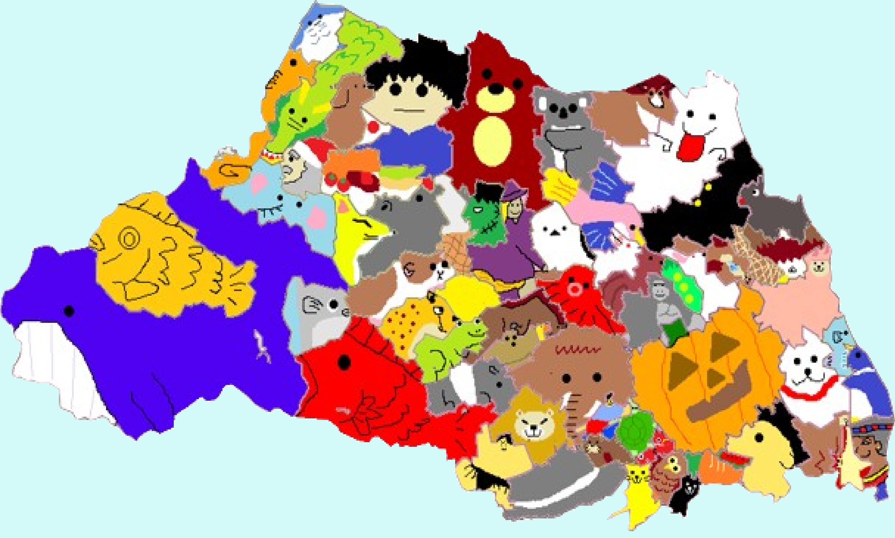
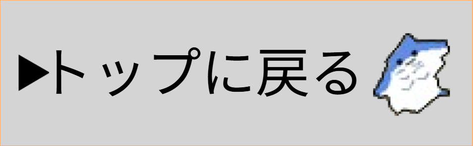
参考文献と使ったフリー素材
©2025 HAKUSHU KASSAI TAMAGERU SAITAMAP All rights reserved.